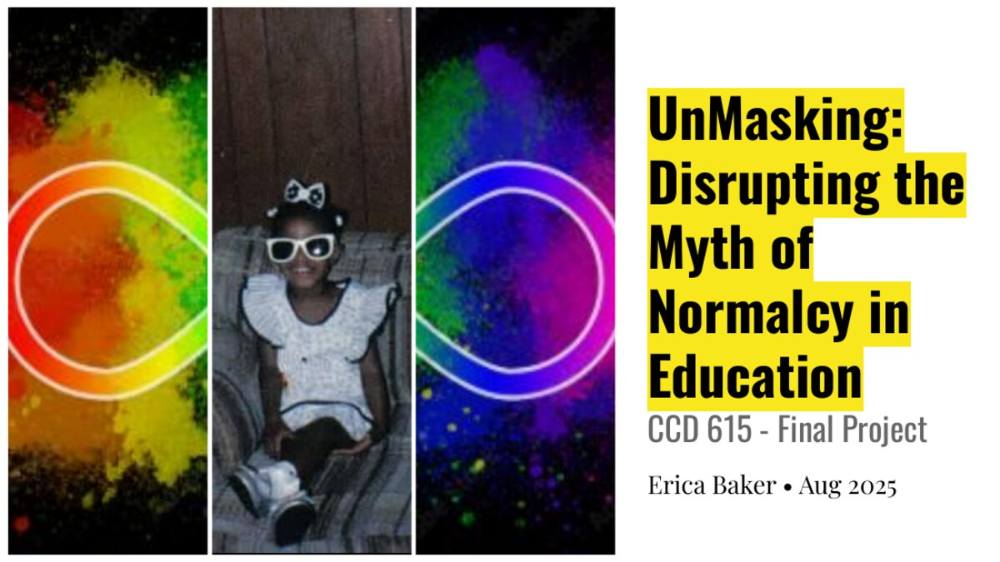

Who is seen?
Schools can misread Black and disabled students when dominant behavior, communication, and learning styles become the standard.
Identity & Education · 2025
Disrupting the myth of normalcy in education through Blackness, disability, neurodivergence, personal narrative, and intersectionality.

The inquiry
UnMasking is a visual and personal inquiry into the ways schools define normalcy. The presentation connects Black identity, disability, neurodivergence, gender, class, sexuality, and nationality to examine how students are recognized, misrecognized, or pushed outside accepted ideas of the ideal learner.
By placing Erica's own story in conversation with disability studies and intersectional scholarship, the project challenges the assumption that educational norms are neutral. It asks educators to notice who those norms protect, who they constrain, and who is required to mask in order to belong.
Normal is not a neutral category. It is a boundary shaped by culture, power, race, and ability.
Core ideas
Schools can misread Black and disabled students when dominant behavior, communication, and learning styles become the standard.
Race, disability, gender, class, sexuality, and nationality interact to shape each learner's experience of belonging.
Equity requires more than helping students perform normalcy. It requires changing the conditions that made masking necessary.
Presentation
Seven slides combining personal history, visual storytelling, intersectionality, and scholarship on Blackness and disability.
View the presentationSelected sources